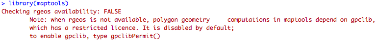

5 Activity: Shape files & maps with R
Shapefiles
A shapefile, sometimes called an ESRI shapefile (aka Environmental Systems Research Institute) is a format for storing the location, shape, and attributes of geographic features. It is stored as a set of related files (about a dozen).
We require a minimum of 3 files:
- .shp — shape format; the feature geometry itself
- .shx — shape index format; a positional index of the feature geometry to allow seeking forwards and backwards quickly
- .dbf — attribute format; columnar attributes for each shape, in dBase IV format (how old is that!)
https://en.wikipedia.org/wiki/Shapefile
The files (.shp, .shx, .dbf) should all have the same prefix (e.g. NZ.shp, NZ.shx, NZ.dbf). We require 3 sets of files in this activity, you can download them from here:
maptools library is one option to load shapefiles in R.
Install the library first.
Load the library.
library(maptools)Look carefully at your RStudio console.
There might be an warning:

So, according to the prompt message, you should run
gpclibPermit()If it is still not work, that means you need to install another package.
Remember the other way to install a package?
install.packages("gpclib")
gpclibPermit()
Load the library again, and you should be ready to use maptools library.
If there are errors when you try to install the gpclib library (mostly happened on Windows).
You should download the RTools at https://cran.r-project.org/bin/windows/Rtools/.
Install it in a path without any space.
After that, you should be able to install the gpclib library.
Unzip your downloaded NZ shapefile and place the 3 files (NZL_adm0.shp, NZL_adm0.shx and NZL_adm0.dbf) into your working directory.
Now everything is ready, do not wait, just plot it:
nz <- readShapeSpatial("NZL_adm0")
plot(nz)Be patient, takes a bit time.
Also, the plot is a bit…unexpected.
Any way, move on to the world!
Move the 3 files (ne_110m_land.shp, ne_110m_land.shx and ne_110m_land.dbf) to your working directory.
world <- readShapeSpatial("ne_110m_land")
plot(world)Let’s plot it in another way (with ggplot).
library(ggplot2)
world_shp <- readShapePoly("ne_110m_land.shp")
ggplot(
world_shp,
aes(
x=long,
y=lat,
group=group
)
) +
geom_path()Head into the detail of world_shp.
You may get confused about the stored structure.
You can use fortify() to transfer it to our familiar tabular format.
Note: this is not necessary.
head(world_shp)
world_map <- fortify(world_shp) # convert into a tabular structure
head(world_maAnd use the tabular format to plot.
ggplot(
world_map,
aes(
x=long,
y=lat,
group=group
)
) +
geom_path()Let’s do a shape file on a map
National parks of America on top of the West coast.
From: http://blog.mollietaylor.com/2013/02/shapefiles-in-r.html
First, put the 3 files (ne_10m_parks_and_protected_lands_area.shp,
ne_10m_parks_and_protected_lands_area.shx and
ne_10m_parks_and_protected_lands_area.dbf) into your working directory.
and read them.
library(ggmap) # Load the shapes and transform
library(maptools)
area <- readShapePoly("ne_10m_parks_and_protected_lands_area.shp")
area.points <- fortify(area) # transformNow let’s have a look at how the parks distribute.
# Add some colour
library(RColorBrewer)
colors <- brewer.pal(9,"BuGn")
# Get the underlying map, it may take a while to get (from google), patience...
mapImage <- get_map(
location = c(lon=-118,lat =37.5),
color = "color",
source="google",
maptype = "terrain",
zoom =6
)
# Put the shapes on top of the map
ggmap(mapImage) +
geom_polygon(
aes(x=long, y=lat, group=group),
data = area.points,
color = colors[9],
fill = colors[6],
alpha =0.5
) +
labs(x="Longitude", y="Latitude")Step by step.
# Plot the base map
plot(mapImage)Then the parks without the base map.
# And the parks without the map...
p <- ggplot()
# a blank
p +
geom_polygon(
aes(x=long, y=lat, group=group),
data=area.points,
color=colors[9],
fill=colors[6],
alpha =0.5
)+
labs(x="Longitude", y="Latitude")And we can stack them layer by layer.
We still forget something.
Remember the unexpected NZ at the beginning?
Why does a huge shape file result in such a small plot (NZ)?
(one theory is that there are lots of little islands, another is that there are too many sheep)
Don’t forget to restore NZ to it’s former glory
nz <- map_data("nz")
#Prepare a map of NZ
nzmap <- ggplot(nz, aes(x = long, y = lat, group = group)) +
geom_polygon(fill = "gold", colour = "gold")
# Plot it in cartesian coordinates
# nzmap
# With correct mercator projection
nzmap + coord_map()
# With the aspect ratio approximation
# nzmap + coord_quickmap()What formats are these built-in maps, e.g. map_data(“nz”), is it a .shp?
How old is this ESRI format?
What are some more recent alternatives?
Can you open just the .shp files (and view shapes) – in R? Some other way?